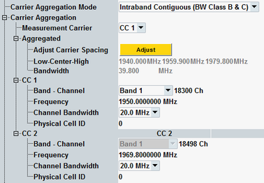

The carrier aggregation mode is part of the analyzer settings at the top of the configuration tree.
If the mode is set to contiguous uplink carrier aggregation, an additional node is displayed for configuration of the individual component carriers (CC1, CC2, ...). The band, channel and frequency settings are moved into this node, as well as the channel bandwidth setting and the physical cell ID setting from the "Measurement Control" section.
These settings are described in the following. Other parameters that depend on the carrier aggregation mode are the spectrum limits and the network signaled value. Some measurement result views are also modified depending on the carrier aggregation mode.

To ensure that the component carriers are aggregated contiguously in the standalone scenario, proceed as follows.
Select the channel bandwidths of both carriers (CC1 and CC2).
Specify the CC1 center frequency (directly or via band plus channel number).
Select whether the CC2 center frequency is lower or higher than the CC1 center frequency:
Specify any CC2 frequency above or below the CC1 frequency.
Press the "Adjust" button.
The CC2 center frequency is adjusted automatically, so that the spacing between CC1 and CC2 is correct. The channel spacing is defined in 3GPP TS 36.101, section 5.7.1A.
For background information, see "Carrier Aggregation".
The settings in Figure "Carrier aggregation settings" are described in the following.
Selects how many component carriers with intra-band contiguous aggregation are measured.
- "Off":
Only one carrier is measured. The node "Carrier Aggregation" is hidden and the remainder of this section is irrelevant. - "Intraband Contiguous (BW Class B & C)":
Two carriers with intra-band contiguous aggregation are measured.
The node "Carrier Aggregation" is shown and the remaining parameters in this section must be configured.
Option R&S CMW-KM502/552 is required for FDD/TDD.
In the standalone (SA) scenario, this parameter is controlled by the measurement. In the combined signal path (CSP) scenario, it is set indirectly via the "Controlled by" setting, see "Scenario = Combined Signal Path".
Remote command:Selects a component carrier for single-carrier measurements. If the selected carrier is not available, a "Sync Error" or an "Underdriven" error is displayed.
- EVM vs. symbol / vs. subcarrier, magnitude error, phase error
- Equalizer spectrum flatness
- Power dynamics
- I/Q diagram
- TX measurement
- Inband emission diagrams
- Spectrum ACLR
- Spectrum emission mask
- Power monitor
- RB allocation table
Adjusts the carrier frequencies for intra-band contiguous aggregation, see "Configuring the component carrier frequencies".
The button is only relevant and visible for the standalone (SA) scenario. In the combined signal path (CSP) scenario with contiguous UL CA, the signaling application adjusts the frequencies.
Remote command:Displays information about the aggregated bandwidth, resulting from the configured frequencies and the channel bandwidths of the carriers.
"Low-Center-High" indicates the lower edge of the aggregated bandwidth, the center frequency and the higher edge. "Bandwidth" indicates the width of the aggregated bandwidth (higher edge minus lower edge).
The displayed bandwidth can be slightly less than the sum of the carrier channel bandwidths. For details, see 3GPP TS 36.101, sections 5.6A and 5.7.1A.
Remote command:The "Frequency" defines the CC center frequency. The carriers must be aggregated contiguously. The correct channel spacing depends on the bandwidths. For standalone measurements, see also "Configuring the component carrier frequencies".
The "Band" setting is identical for the two carriers. Configuring the band and the channel numbers is optional, as for configurations without carrier aggregation.
In the standalone (SA) scenario, these parameters are controlled by the measurement. In the combined signal path (CSP) scenario, they are controlled by the signaling application.
Set the bandwidths in accordance with the measured LTE signal.
In the standalone (SA) scenario, this parameter is controlled by the measurement. In the combined signal path (CSP) scenario, it is controlled by the signaling application.
Set the physical cell IDs in accordance with the measured LTE signal.
In the standalone (SA) scenario, this parameter is controlled by the measurement. In the combined signal path (CSP) scenario, it is controlled by the signaling application.